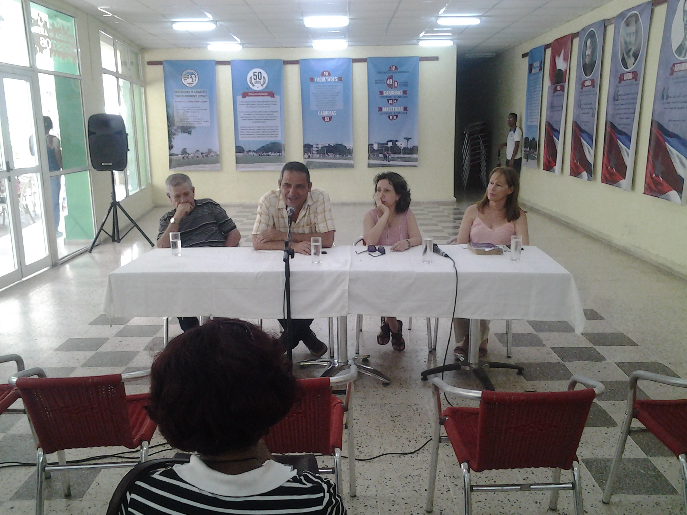
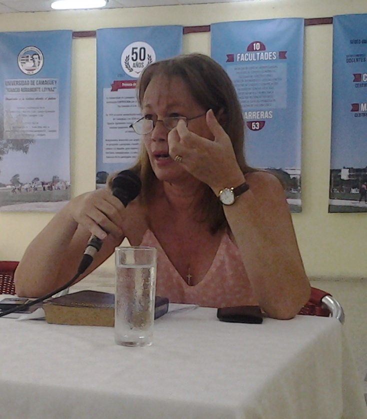

Yoan Pico: Bienvenidos al tercer panel de la revista digital de literatura y arte La Liga. Comenzamos el miércoles con un debate a mi juicio muy interesante sobre el vestir en Cuba, discusión a la que puso término un desfile de moda de la Casa Leyva; al día siguiente tuvimos otro sobre imaginarios deportivos cubanos. En ambos paneles y en este que hacemos hoy, el tema de la migración ha estado latiendo porque es un fenómeno muy vivo en un mundo donde los principales conflictos vienen generados por las consecuencias de la movilidad humana.
Sobre eso nos proponemos reflexionar hoy; mi papel aquí es el de un simple moderador y quisiera empezar haciendo un recordatorio sobre la importancia de los nexos culturales generados por la emigración en el caso particular de Cuba. A mí, siempre se lo digo a mis estudiantes del ISA, me llama la atención Martí. Sus Versos Sencillos son para muchos la esencia de la cubanía, sin embargo, mucho del paisaje que aparece en esos poemas es paisaje norteamericano y paisaje español. Hay un poema en particular que lo ilustra mucho: “Para Aragón en España / Tengo yo en mi corazón / Un lugar todo Aragón, / Franco, fiero, fiel, sin saña. / Si quiere un tonto saber / por qué lo tengo le digo…La conclusión es sencilla: El hombre que estaba preparando una guerra contra España, tenía en su corazón el espíritu español, un espíritu amante de la misma libertad que él intentaba defender.
Esos cruzamientos han estado en la propia medula de la nación cubana: Félix Varela vivió mucho tiempo en los Estados Unidos y dijo: “Yo soy en los afectos un natural de este país”. Martí pudo decir algo similar, por eso pudo comprender a Whitman, por eso pudo comprender esa cultura. Los más grandes piropos a la cultura norteamericana los ha dicho Martí: “se vive como en un astro”. Incluso esa frase muy citada de “Viví en el monstruo y le conozco las entrañas” puede tener otra lectura. Pedro Pablo Rodríguez nos recuerda que monstruo también es sinónimo de monumentalidad, de gigantesco y no la visión de alien que usualmente le damos a los estudiantes de secundaria básica.

Entonces me gustaría que sobre eso versara la conversación de hoy. Sé que María Antonia Borroto y Beatriz Goenaga se van a referir al siglo XIX como lo he hecho yo, a la historia, pero la migración es un asunto palpitante para el pueblo cubano, por más que nos empeñemos en tocarlos con pinzas o en no abordarlo directamente, no podemos ignorar que en los últimos meses el pueblo cubano se ha visto afectado por un intenso flujo migratorio y eso ha ocasionado un impacto en nuestras propias vidas, yo mismo tengo muchos amigos que han emigrado, entonces me gustaría que la discusión alcanzara este periodo. Sé que Francisco Luna, otro de nuestros invitados que no tiene pelos en la lengua, lo dirá a su manera; le doy la palabra, entonces, a Beatriz Goenaga.
Beatriz Goenaga: Me quiero referir de inicio a este asunto de la identidad, de los flujos migratorios, desde una posición un poco más abarcadora, más allá de las fronteras nuestras, teniendo en cuenta al Caribe, que es, en definitiva, la zona geocultural a la que pertenecemos y que no podemos eludir porque forma parte constituyente de nuestros procesos identitarios.
La cultura caribeña debe ser observada desde dos aristas fundamentales: la unidad en la diversidad; este va a ser el eje de las ideas que voy a compartir con ustedes en muy breve síntesis. Algunos autores han planteado la necesidad de concebir el Caribe en tanto fractal, cada una de sus partes constituyentes reflejan la totalidad. Entonces como estamos hablando de identidad, por mi formación lingüística, lo primero que hice fue ir al diccionario y allí encuentro que la palabra latina idem —de la que proceden idéntico e identidad— significa lo mismo, como término de comparación o referencia, no como condición del ser. Según el diccionario se dice idéntico de lo que en sustancia y accidente es lo mismo que otra cosa con la que se compara.
Nuestro país cuenta con una abundante teorización acerca de la identidad y voy a referirme de inicio a los que han teorizado sobre el fenómeno desde una óptica cubana, para terminar refiriéndome a algunos pensadores que adoptan una posición más global. Enrique Ubieta, por ejemplo, define la identidad como una perspectiva sicológica o sociológica, el resultado cambiante de un proceso nunca concluso, histórico o biográfico, de autoreconocimiento por el que un hombre como individuo social o como parte de una colectividad —momentos que se confunden y complementan— adquiere cierta comprensión de su singularidad con respecto a otros hombres o colectividades.
De este enunciado podemos sacar una conclusión fundamental y es que los procesos identitarios nunca debemos verlos estancos, sino en constante fluir y en su devenir. Nos dice Yolanda Wood que la identidad está vinculada a sentimientos propios de ella y a factores sicosociales que intervienen en ella como la nostalgia, el olvido, anhelos, ansias, espacios nuevos que son productores ellos mismos de nuevos sentimientos. Podemos deslindar, entonces, unas constantes variables que están incluidas en lo que a identidad se refiere y en este caso siempre teniendo en cuenta que la identidad desde cualquier perspectiva es un hecho cultural, entonces la identidad cultural caribeña la observaremos desde tres puntos nodales: el lenguaje, la historia y los mitos.
¿Por qué el lenguaje si sabemos que en el Caribe hay una pluralidad de expresiones lingüísticas? Porque a pesar de que hablamos idiomas diferentes, nos referimos y nutrimos de una fuente común que es la oralidad. La historia, porque como se sabe más allá de los matices diferenciadores de cada uno de nuestros países caribeños, nos une el hecho de estar vinculados a una historia de conquista y colonización, de oleadas migratorias que no han terminado, desde y hacia el Caribe, a la economía de plantación y a similares tradiciones de lucha y resistencia. Al mito debemos siempre mirar porque, como sabemos, es un producto híbrido que se ha nutrido tanto de nuestros antecedentes aborígenes como de la presencia africana y la europea.
Además de estos tres puntos nodales hay que ver la identidad cultural caribeña desde otras constantes variables, me estoy refiriendo a la raza que es algo trascendental y a la que después volveré brevemente, la insularidad, los viajes, el exilio, la diáspora que ha tenido hoy en día mayor representatividad. La raza en el Caribe debe ser entendida desde la multiplicidad de rostros que la componen. Sabemos que el principal componente racial en nuestras islas caribeñas y las zonas costeras que componen el gran Caribe es el negro y la teorización sobre el negro comenzó temprano, desde el siglo XIX fundamentalmente, pero la conciencia del negro como tal tiene mayor desarrollo durante el siglo XX, pues en este siglo surgen tres movimientos importantes que tienen al negro como eje central. En el Caribe hispano hablamos del negrismo que es tributario de las vanguardias y que tiene una expresión literaria. La figura cimera de este movimiento en nuestro país y en el Caribe hispanohablante es Nicolás Guillén y más allá del componente literario, me voy a referir al hecho de que el negro que se refleja en la poesía de Guillén, Ballagas y Zacarías Tallet, por poner solo estos ejemplos, es un negro que está imbricado en nuestra cultura, forma parte de ella, con sus antecedentes africanos, pero es un producto cubano.
¿Qué sucede en el Caribe francófono? Allí surge un movimiento histórico y literario de gran envergadura, me refiero a la negritud, con sus mayores representantes en Frantz Fanon y René Depestre, Frantz Fanon en un ensayo llamado “Antillanos y africanos” decía que el antillano después de 1945 ha alterado sus valores, mientras que antes de 1930 tenía los ojos fijos en la Europa blanca y el bien para él era la evasión fuera de su color, en 1945 se descubre no solamente de color negro, sino un hombre negro. Esto es un hecho trascendental, importantísimo por la expresión que tiene en el movimiento de la negritud: la negritud rescata el orgullo de ser negro, el negro se siente fiero, sabe el poder que le asiste como ser humano. La negritud tuvo gran trascendencia y todavía hoy se le debe en el desarrollo digamos social y político del Caribe; pero también tuvo sus deficiencias porque nada es perfecto y es que los ojos de este movimiento no estaban puestos en el Caribe en sí, sino en África, planteaba que el negro debía retornar a África ya que allí estaba su madre patria.
De igual manera sucede en el Caribe anglófono con otro movimiento también de emancipación de las cadenas mentales, como dice Bob Marley en su canción, el Back to Africa liderado por Marcus Garvey, un movimiento que abarcó no solamente la Jamaica de donde sale, sino todo el Caribe angloparlante, incluso Garvey fue un hombre viajero, estuvo en Cuba, Estados Unidos, llevando y promulgando esos ideales que imbricaban de una manera tan precisa y con tanto vigor al hombre negro caribeño, pero de igual manera los ojos del Back to Africa, como bien dice el nombre, estaban puestos en África. Estos movimientos de valorización del hombre negro y de la mujer negra en el Caribe no veían la solución de sus problemas en el lugar en el que vivían, sino justamente en África, lo cual no sucedió con nuestro movimiento negrista y con nuestro Nicolás Guillén que, como ustedes saben bien, desde el principio nos definió como el color cubano, el todo mezclado al cual pertenecemos.
La identidad cultural caribeña sigue transitando otros momentos; no me puedo detener, por supuesto, en todos ellos porque son varios, pero sí hay un momento importante en los años sesenta con un escritor y pensador martiniqués Édouard Glissant que deben conocer porque fue director de la revista Correo de la Unesco. Édouard Glissant propone ya no el Caribe visto desde la raza, sino atendiendo a nuestra condición de antillanidad, es decir, al ser antillanos compartimos tradiciones, compartimos sentimientos, compartimos esa mismidad a la cual me refería al principio.
A raíz de esta reflexión sobre la antillanidad de Édouard Glissant surge otra posición heredera tanto de la negritud como de la antillanidad. Jean Bernabé, Raphaël Confiant y Patrick Chamoiseau, escriben en los años ochenta un libro importante, de mucha actualidad todavía: Elogio de la creolidad, no sé si lo conocen, quizás esté entre los libros que se venden en esta Feria, es lo más probable. En Elogio de la creolidad estos escritores se declaran epígonos de René Depestre y de Frantz Fanon en cuanto al pensamiento de emancipación que la negritud le trajo al pueblo martiniqueño, pero ellos aclaran que la creolidad es un agregado interracional y transracional de los elementos culturales caribe, europeo, africano, asiático y levantino que el yugo de la Historia reunió en un mismo suelo. Como ven este concepto ya va más allá de la raza negra e incluye todos los otros elementos que confluyen en este gran todo mezclado que es nuestro Caribe.
La creolidad es según estos autores el mundo difractado, pero recompuesto. La creolidad también ha tenido sus detractores, ellos se basan fundamentalmente en el uso de la lengua Creole, pero la lengua Creole y el criollo en sí mismo es una noción, un concepto también, que, como todos los procesos identitarios caribeños, ha tenido su desarrollo y su evolución en los siglos XVIII y XIX. Digo XVIII y XIX atendiendo a la disparidad cronológica que hay en el Caribe en cuanto a sentimiento nacional.
Un criollo era un blanco hijo de europeo, sin embargo el concepto luego va incluir al negro hijo de africanos nacido en este contexto. Indiscutiblemente, tal como nos lo presentan estos autores ya el criollo abarca al hindú, al chino, al árabe, es decir a todos aquellos nacidos en estas tierras. El término criollo indiscutiblemente tiene un común denominador que es el nacer aquí, pero la creolidad también tiene sus detractores, incluso una escritora como Maryse Condé, guadalupeña, un país donde se habla lengua criolla, dice que se puede ser criolla sin la creolidad porque ella es una escritora que escribe en francés, se siente cómoda escribiendo y expresando sus valores y su cultura en el idioma que se le impuso, para decirlo de alguna forma.
Volviendo a la constante a la que me refería cuando inicié mi intervención —que todo acercamiento al Caribe debe hacerse desde lo mismo y lo diverso— y ya para terminar este apurado y brevísimo recorrido, quiero citar a Édouard Glissant, quien nos dice: “Apreciamos los avatares de la historia contemporánea como episodios inadvertidos de un gran cambio civilizacional que pasa del universo trascendental de lo mismo impuesto de manera fecunda por Occidente al conjunto difractado de lo diverso conquistado de manera no menos fecunda por los pueblos que han alcanzado hoy día su derecho a estar presentes en este mundo. Lo mismo, que no es lo uniforme ni lo estéril, marca el esfuerzo del espíritu humano hacia esa trascendencia de un humanismo universal que sublimiza a los particulares nacionales. Lo diverso que no es lo caótico ni lo estéril, significa el esfuerzo del espíritu humano hacia una relación universal sin trascendencia universalista, lo mismo requiere del ser, lo diverso establece la relación”. Este concepto de relación es básico para entender los procesos de identidad cultural en el Caribe pues el propio Glissant nos dice que la relación es el lugar ejemplar en que las naciones y comunidades, cada una con su originalidad, comparten un mismo devenir, es decir no como negación de lo ajeno, sino como apertura hacia el otro.

Yoan Pico: Gracias a Beatriz que está a punto de defender su tesis de doctorado y creo que eso se ha notado a lo largo de toda su exposición. Le doy la palabra a Francisco Luna que se va a referir desde una perspectiva histórica al asunto que hoy nos ocupa.
Francisco Luna: Quiero reconocer que vine a aprender y he aprendido bastante. El hombre es un animal viajero, que siempre emigra. O sea, la emigración no es nada nuevo, aunque haya gente que se sorprenda. Ustedes saben que la humanidad nace en el centro de África y precisamente por esa ansia de búsqueda de comida, de mejores tierras, de factores climáticos, hubo que emigrar y se extendió la civilización. Todos llevamos un gen africano, eso está ya hoy determinado desde el punto de vista genético, además de descubrimientos que se habían hecho de restos de fósiles a lo largo de la ruta que siguieron en los diferentes momentos.
Hay personajes importantes en la historia, como Alejandro que llegó hasta Persia y pasó a la India, incluso asimilando las culturas porque eran en algunos casos superiores a la famosa y clásica cultura griega.
Este proceso de transculturación, como después aprendimos con Fernando Ortiz, se da mundialmente. Cuando se produce el encontronazo de culturas en América con la llegada de Colón lo que viene con él ya es una diversidad cultural. A veces decimos, para sintetizar, la cultura española, la cultura africana… No, en España no había una cultura, había diferentes zonas que hoy son autonomías o regiones: el País Vasco es una cosa, Galicia es otra cosa, Aragón es otra cosa, Barcelona es más europea que Castilla… Por tanto, lo que viene de España es una diversidad cultural, y de África también: hay una diferencia cultural, religiosa, de dialectos, de formas de comer, de formas de vestirse y realmente es complejo el proceso de lo que llega a Cuba y a América, se calcula que llegaron alrededor de treinta millones de africanos.
Por eso yo siempre hablo de saqueo poblacional pero también de saqueo genético. De África se trajo lo mejor, la famosa selección natural de Darwin es aplicada por la violencia. A los tratantes —que eran africanos, al menos los que capturaban a los esclavos— no se les ocurría coger a un jorobado ni a un chiquitico. ¿A quiénes cogían? A los mejores negros, los más grandes, los más fuertes, y a las mejores negras. Esos sobrevivían hasta llegar a la costa, allí los metían en barracones y se morían los más débiles, y después, en el barco, moría otro tanto. ¿Quiénes llegaron a América? Los más fuertes, los más altos.
Yo llegué a la Unión Soviética en el año 63 y cuando vi a los negros de África con cuatro manos de pintura que brillaban como charoles, con los ojos colorados como mandinga y chiquiticos y flacos me dije: “Pero estos no son iguales que los negros de Cuba”. Los negros de Cuba son atletas, son fuertes, como hombres son hermosos, igual que las negras. Entonces tú te das cuenta de que África está afectada no solo por la cantidad de gente que le sacaron, sino por la riqueza genética que también le extrajeron y eso fue lo que llegó al Caribe, a las islas inglesas, a Jamaica, a Haití, a Suriname, porque el Caribe no es solo las Antillas, hay costas de América del Sur que pertenecen al Caribe, costas de Venezuela, de Colombia y esta mezcla es compleja, esta mezcla de español y de africano y de indio.
Los aborígenes dejaron mucho en nuestra cultura, recuérdese que durante los siglos XVI y XVII la mayor proporción de población en Cuba es aborigen, no española ni africana. Es a finales del XVIII y principios del XIX con el auge de la plantación esclavista que se produce creo que en apenas treinta años la llegada de 425 mil africanos. Por tanto este complejo proceso de transculturación no es estanco, como dice la profesora, sino que está en constante cambio: siempre la identidad está en proceso de conformación, es por eso que don Fernando Ortiz hablaba del ajiaco.
En el caso de Camagüey durante los primeros años del siglo XX llegaron más de un millón y medio de extranjeros de treinta y cuatro nacionalidades, vinieron hasta noruegos, suecos, para no hablar de la cantidad de españoles y norteamericanos, no solo personas adineradas pues también vinieron trabajadores norteamericanos y muchos españoles muertos de hambre, a hacer carbón, como bueyeros, a poner comercios, pero sobre todo muchos carboneros. Todo esto fue conformando en un segundo momento la identidad camagüeyana, fue una nueva carga cultural. Yo tengo una amiga que defiende mucho los temas del racismo y esas cosas, pero ella es descendiente de jamaicanos y yo le digo: “Está bueno ya de hablarme de los negros esclavos, que los parientes tuyos vinieron voluntariamente de Jamaica para acá, nadie los trajo por la fuerza, llegaron aquí porque se estaban muriendo de hambre en Jamaica y hablar de jamaicanos implica diferenciarlos de los haitianos”. Conocí en el campo, siendo muchacho, colonias de jamaicanos y de haitianos, el jamaicano se consideraba un súbdito inglés. Era alfabetizado, era protestante, generalmente el haitiano era analfabeto y practicaba el vudú. El jamaicano veía como un inferior al haitiano, era un negro bruto, un negro analfabeto y semisalvaje y el jamaicano por su comportamiento se sentía un poco más civilizado y hay que decir que durante todos estos años hubo migraciones, la migración siempre ha sido un factor originado por problemas políticos o por grandes problemas económicos.
En Cuba hasta el siglo XIX la emigración fue por problemas políticos pues por la independencia muchos cubanos emigraron, recordemos que Maceo estuvo en Costa Rica, allí está Nicoya, donde hay descendientes de cubanos. En México hay otra gran colonia; hay cubanos en Guatemala, el que hizo el himno de ese país es cubano, de Bayamo. A España fueron muchos cubanos, la mayoría a estudiar y algunos se quedaron y se casaron, como también fueron a los Estados Unidos, que era lo más cercano. Los Estados Unidos en el imaginario popular del siglo XIX, del XX y del XXI representa el desarrollo científico, económico, la riqueza, el bienestar, y todo esto ha incitado e incita la emigración hacia allí. Lo que pasa es que no todos podemos vivir en los Estados Unidos, los millones del Sur no podemos mudarnos en pandilla para allá.
Los Estados Unidos son un país de emigrantes, pues todos sabemos que los auténticos norteamericanos son los indios, los Sioux, los comanches, los cherokees, los creek. Casualmente ayer me enteré de que hace trece mil años estaban fabricando flechas con punta de piedra, es el aporte de ellos a la tecnología porque las flechas hasta ese momento no tenían punta de piedra y ellos la pusieron. Esos son los auténticos americanos, quienes también eran migrantes: cruzaron por la Siberia y por el Sur.